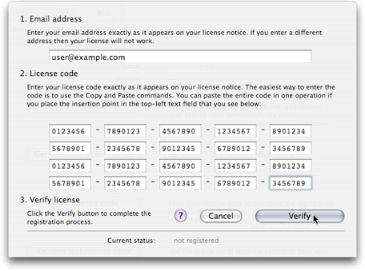

Activation
Product activation takes place when you enter your license code and click the “Verify” button (see Registering Hextrapolate).

The program connects once (and once only) to the secure.wincent.com webserver to validate the license and the product is then activated permanently. If you later install the product on another machine, you will need to activate the product once more on that machine (see Transferring your license). The activation process takes only a few seconds.